Grand Palladium Imbassaí Resort & Spa
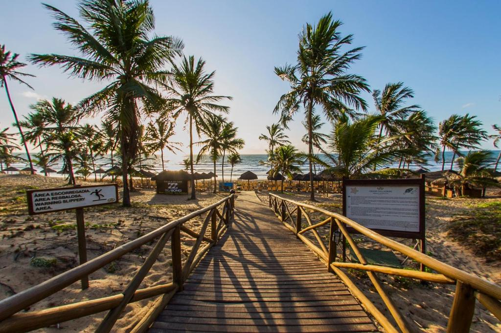
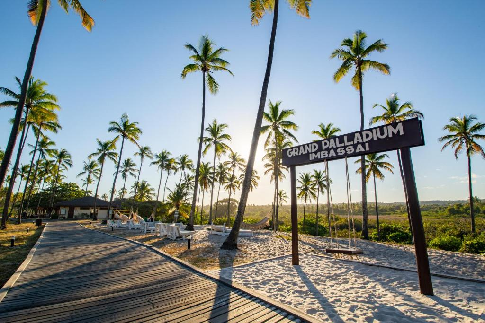
♦ Descrição ♦
O Grand Palladium, na Praia de Imbassaí (BA), é um resort 5 estrelas com tudo incluído. Oferece quartos de luxo com varanda e comodidades modernas. A propriedade conta com WiFi gratuito, estacionamento de cortesia e atividades como golfe e tênis.
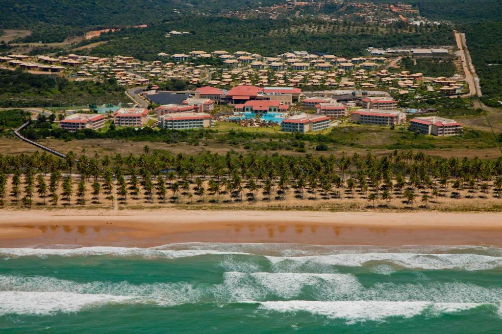♦ Localização ♦
O Grand Palladium está dentro da área protegida de Imbassaí, ao longo da Costa da Linha Verde na Bahia. Salvador fica a 95 km.
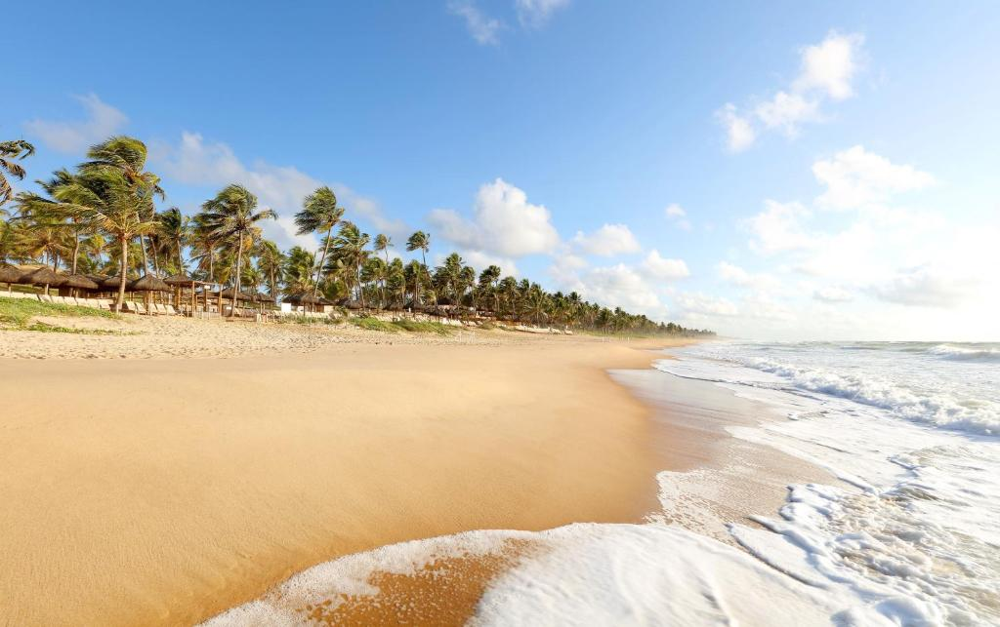
♦ Acomodação♦
As suítes no Grand Palladium Imbassaí Resort & Spa têm cama king-size e frigobar. Também incluem TV de tela plana via satélite e base para iPod. Além disso, dispõem de ar-condicionado e área de estar. Os banheiros possuem banheira de hidromassagem.
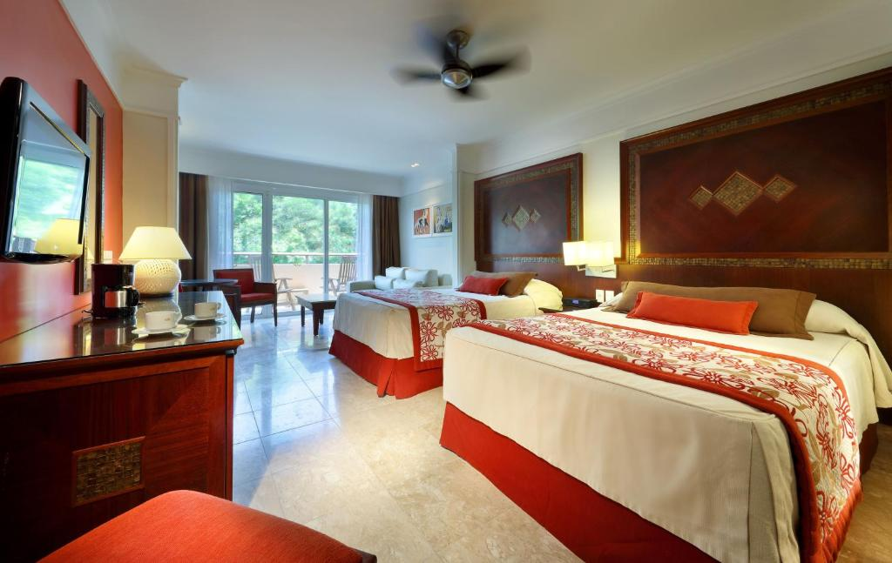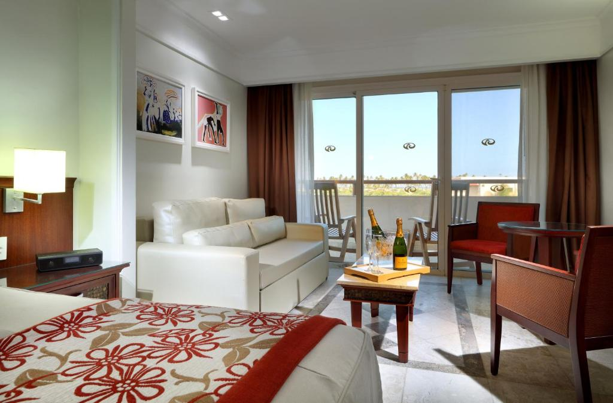
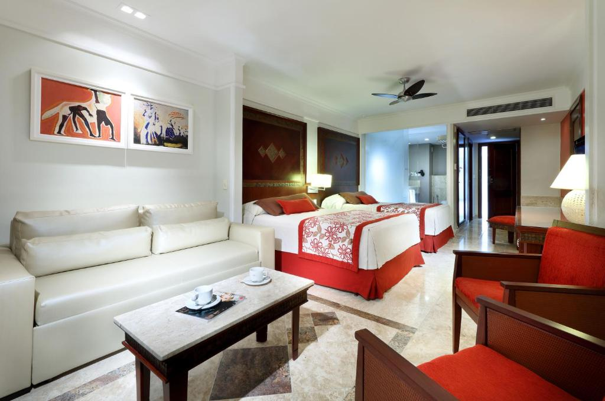
♦ Alimentação ♦
Você poderá desfrutar de espetáculos noturnos e 5 opções gastronômicas. Três deles servem pratos brasileiros, indianos e japoneses à la carte. As refeições também podem ser saboreadas nos 2 restaurantes em estilo buffet. O complexo tem 10 bares, que fornecem uma variedade de bebidas nacionais e importadas. Todas as refeições e bebidas, alcoólicas ou não, estão incluídas nas diárias.
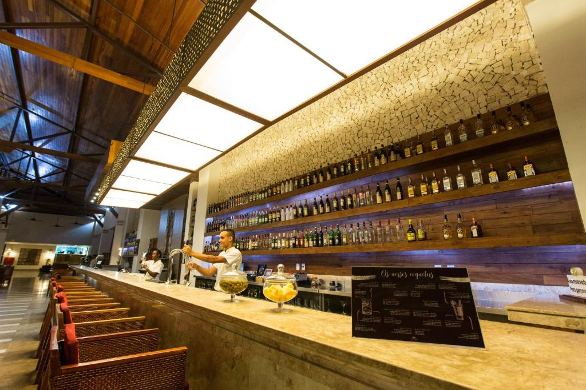
♦ Lazer ♦
O Grand Palladium Imbassaí, hotel 5 estrelas com tudo incluído, conta com 5 piscinas. Você poderá ainda jogar vôlei na praia ou usar a quadra de basquete. Esportes aquáticos como polo, canoagem e windsurf estão disponíveis. Atividades para bebês, crianças e adolescentes são realizadas nos miniclubes do hotel. A academia oferece aulas de aeróbica e de spinning. O spa dispõe de tratamentos de massagens, tratamentos faciais e corporais.
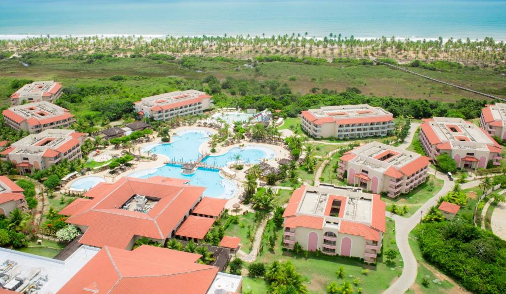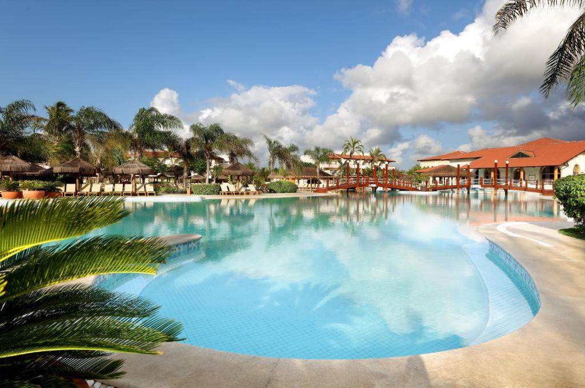
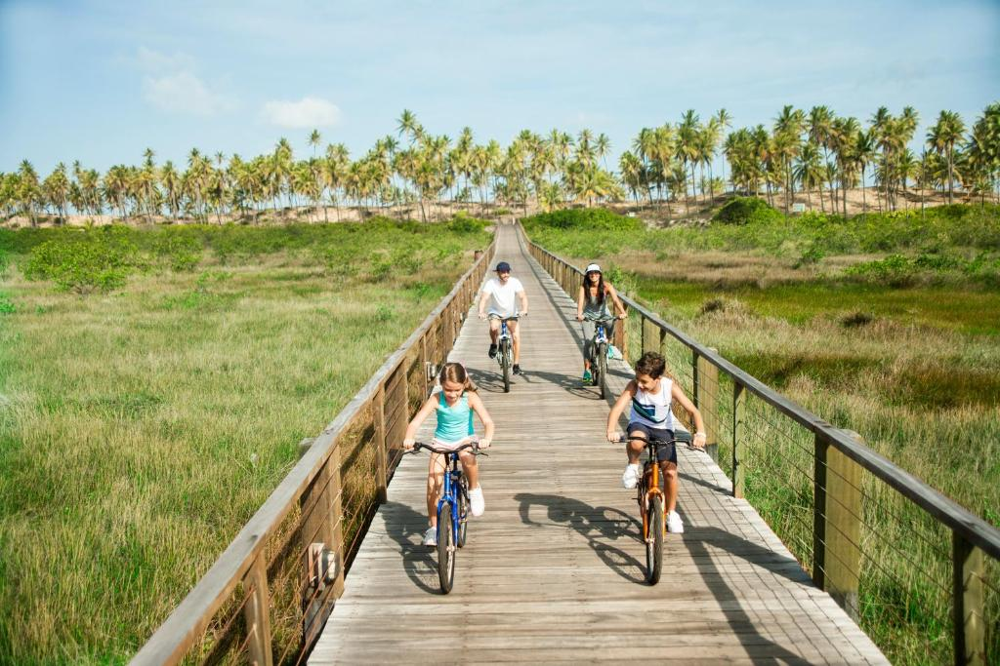
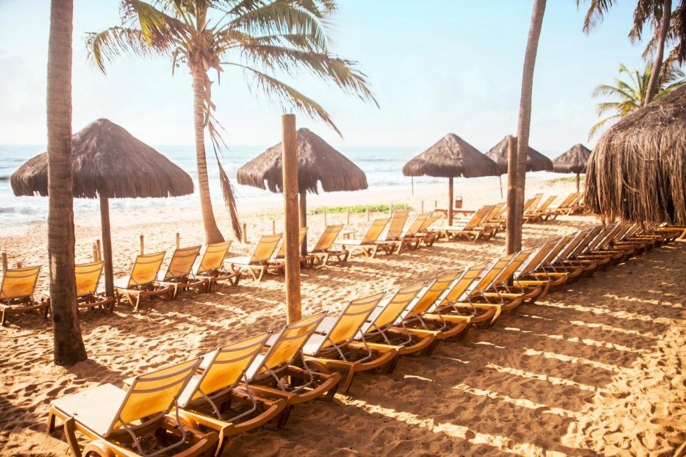
♦ Reservas ♦
Entradas das 15h às 21h30.
Saída até 12h.
Cancelamento/pré-pagamento: As políticas de cancelamento e pré-pagamento variam de acordo com o tipo de acomodação.
Políticas para crianças: Crianças de qualquer idade são bem-vindas. Para ver os preços e as informações de ocupação certos, informe quantas crianças fazem parte do seu grupo e a idade delas.
Não há exigência de idade para o check-in.
Animais não são permitidos.